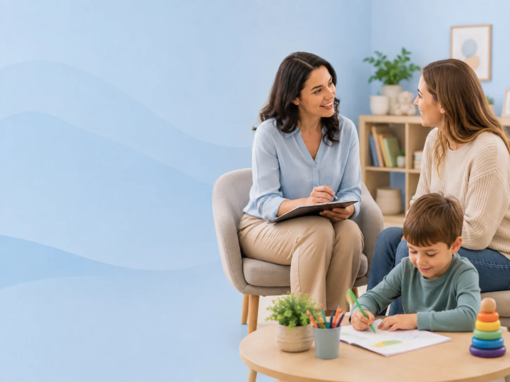

Çocuk ve Aile Danışmanlığı
Çocuk kadar ailenin de desteğe ihtiyacı olur. Evde karşılaştıklarınızı konuşup birlikte uygulanabilir bir yol belirliyoruz.
Randevu Talep EdinÇocuk ve aile danışmanlığı nedir?
Bir çocuğun gelişimi tek başına seans odasında ilerlemez. Çocuk haftanın büyük kısmını evde, okulda, parkta geçirir — ve gerçek değişim orada olur. Bu yüzden aileyi sürecin dışında değil tam merkezinde konumlandırıyorum.
Çocuk ve aile danışmanlığı, ebeveynin somut sorularını konuştuğumuz alandır: Sabah rutini neden her gün kavgayla bitiyor? Kardeş kıskançlığında ne yapmalı? Ekran süresini nasıl sınırlarım? Öfke anında ne söylemem işe yarar?
Burada size hazır bir ebeveynlik reçetesi vermiyorum — çünkü öyle bir şey yok. Sizin ailenizin işleyişine, çocuğunuzun özelliklerine ve gerçekten uygulayabileceğiniz koşullara uyan yaklaşımları birlikte belirliyoruz.
Bu süreç bir psikoterapi değildir. Odağımız çocuğun günlük yaşam katılımı ve ailenin bu süreçteki rolüdür. İhtiyaç gördüğümde ilgili uzmanlara yönlendirme yapıyorum.
Kimler için uygundur?
Aşağıdaki cümlelerden birkaçı size tanıdık geliyorsa konuşalım:
- Çocuğuma nasıl yaklaşacağımı bilemediğim anlar oluyor
- Aynı tartışma her gün aynı saatte tekrarlanıyor
- Kardeşler arasındaki dengeyi kurmakta zorlanıyorum
- Sınır koymakla katı olmak arasındaki çizgiyi bulamıyorum
- Eşimle çocuk konusunda farklı yaklaşıyoruz
- Çocuğumun gelişimiyle ilgili endişelerim var ama nereye başvuracağımı bilmiyorum
- Uzman önerilerini evde uygulamaya çalışıyorum ama sürdüremiyorum
Görüşmelerde neler yapılır?
Gözlem paylaşımı
Evdeki zorlanma anlarının ayrıntılı olarak konuşulması.
Durum çözümlemesi
Tekrarlayan zorlu anların hangi noktada döngüye girdiğinin birlikte incelenmesi.
Uygulanabilir yaklaşım belirleme
Sizin koşullarınıza uyan, gerçekten sürdürebileceğiniz adımların seçilmesi.
Rutin ve sınır planlaması
Günlük düzenin ve sınırların çocuğun gelişim düzeyine uygun kurulması.
Takip ve revizyon
Denenen yaklaşımların işe yarayıp yaramadığının gözden geçirilmesi.
Yönlendirme
İhtiyaç görüldüğünde ilgili uzmanlara yönlendirme.
Beklenen kazanımlar
Süreçte hedeflediğimiz alanlar:
- •Zorlanılan anlarda ne yapacağınıza dair netlik
- •Ev içi rutinlerin daha öngörülebilir hâle gelmesi
- •Çocuğunuzun davranışlarının ardındaki ihtiyacı okuyabilmeniz
- •Ebeveyn olarak kendinizi daha az yalnız ve daha yetkin hissetmeniz
- •Eşinizle ortak bir yaklaşım kurabilmeniz
- •Uzman önerilerinin evde sürdürülebilir hâle gelmesi
Bunlar hedeftir, taahhüt değildir.
Süreç nasıl işliyor?
İlk görüşmede sizi ve gündeminizi dinliyorum. Ailedeki işleyişi, denediklerinizi ve sizi en çok zorlayan anları konuşuyoruz. Buradan bir öncelik listesi çıkarıyoruz — hepsini aynı anda ele almak yerine, en çok fark yaratacak bir veya iki başlıkla başlıyoruz.
Görüşme sıklığı ihtiyaca göre belirlenir. Bazı ailelerle birkaç görüşme yeterli olur, bazılarıyla çocuğun terapi sürecine paralel olarak düzenli devam ederiz.
Danışmanlık, çocuğunuz benimle seans yapıyorsa sürecin doğal bir parçasıdır; çocuğunuz seans yapmıyorken de tek başına yürütülebilir.
Sık sorulan sorular
Çocuğum seans almıyor, sadece ben danışabilir miyim?
Evet. Ebeveyn danışmanlığı tek başına yürütülebilen bir süreçtir. Bazı durumlarda ailedeki küçük değişiklikler, çocuğun terapi almasına gerek kalmadan yeterli olabilir.
Bu bir psikolojik danışmanlık mı?
Hayır. Odağım çocuğun günlük yaşam katılımı ve bu süreçte ailenin rolü. Psikolojik destek gerektiren durumlarda ilgili uzmanlara yönlendiriyorum.
Eşimle birlikte katılabilir miyiz?
Kesinlikle — hatta önerdiğim şey bu. Ebeveynlerin ortak bir yaklaşım kurması sürecin en belirleyici etkenlerinden biri.
Görüşmede konuştuklarımız gizli kalıyor mu?
Evet. Görüşmelerde paylaştıklarınız mesleki gizlilik kapsamındadır.
Çocuğunuz için doğru adımı birlikte belirleyelim
Aklınızdaki soruları konuşmak için kısa bir görüşme yeterli.